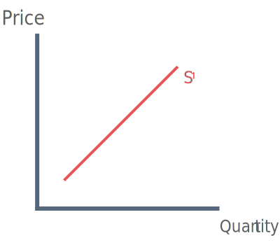
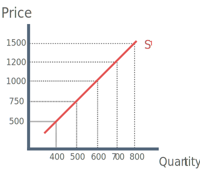
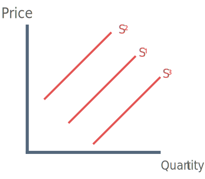

What is supply?
Supply is the producers willingness and ability to provide a good to the market, at a given price.
Essentially this means businesses have to assess how much of a good they feel is worthwhile producing and selling given the market price.

There is a positive correlation between price and quantity. Think of supply as the counterpart to demand, the higher the price the more goods the producer will supply to the market, this is due to the incentive of profit for suppliers.
Constructing the supply curve
The supply curve is a graph if the relationship between the price of the good and the quantity supplied.
Below is a supply schedule, the supply schedule is a table that shows the relationship between the price of the good and the quantity supplied.
| Price per tonne (£) |
Quantity Demanded (tonnes) |
| 500 |
400 |
| 750 |
500 |
| 1000 |
600 |
| 1200 |
700 |
| 1500 |
800 |

The supply curve is constructed by showing quantity supplied along the horizontal axis and price along the vertical axis:
By plotting the points above we find the following:
Higher prices lead to greater quantities being supplied.
Lower prices lead to smaller quantities being supplied.
This is known as the law of supply.
Why does the supply curve slope downwards?
There are three key reasons why the supply curve slopes downwards:
1. Profit motive
When the market price rises, selling more goods will generate more profits. It becomes more profitablle for businesses to increase their output.
2. Production Costs
Increasing output means increasing costs of production. It's impossible to increase quantity without increasing costs.
Firms are only going to increase the quantity of output if they can cover their costs. To cover their costs they need a higher price.
3. New Entrants
A higher price will act as an incentive for new businesses to enter the market. More firms in the market producing the good will result in an increase in quantity supplied.
Factors that shift the supply curve

1) Change in raw material prices
If for example the price of raw materials such as suger increases, then the production of goods containing sugar becomes more expensive and less is supplied to the market. (Supply curve shifts to the left)
2) Technological Advancement
Invention or innovation of new technologies may result new processes making production cheaper, thus more can be supplied to the market by producers. (Supply curve shifts right)
3) Labour productivity
Higher labour productivity results in lower costs of production, thus allowing a firm to increase the supply of a good.
4) Regulation
If the law on the production of a good is lifted e.g. Cannabis, then supply will increase.
5) Wage Rates
If wages rise, then firms are forced to allocated less money to production and supply will fall.
6) Subsidies
These are forms of payment made by the government to a firms, which lower the cost of production and cause an increase in supply.
7) Tax
A tax (direct or indirect) is a form of payment made by a firm to the government. Therefore in the instance of tax, firms have less money to allocate to production, thus supply decreases.
8) Expectations
If producers expect a change in the market they may increase or decrease supply, for example if firms believe the price of their good will increase in the close future they will increase supply.
9) Number of suppliers
The more firms there are in the market the greater the supply of a good or service.
10) Objectives of firms
Some firms have objectives of increasing market share by increasing supply at the current market price.